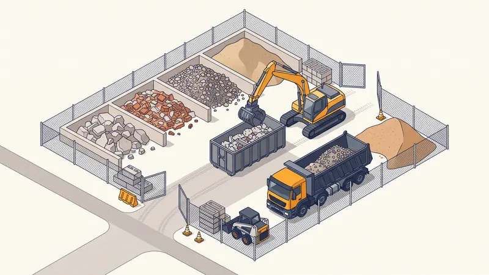

Prix Évacuation Gravats & Déblais 2026 : Tarifs au m³ & Guide Complet
Vous avez un projet de démolition, de rénovation ou de terrassement et vous vous demandez combien va coûter l'enlèvement des déchets ? Le prix de l'évacuation des gravats est l'un des postes les plus sous-estimés d'un chantier, alors qu'il peut représenter 15 à 30 % du budget total. Entre le foisonnement qui gonfle les volumes, la taxe de décharge, le tri obligatoire et le choix entre big-bag, benne ou camion, il est facile de se tromper. Ce guide détaille les tarifs d'évacuation des déblais et déchets de chantier en 2026 à Aix-en-Provence et en PACA, et vous donne toutes les clés pour maîtriser ce coût.

Comprendre le foisonnement avant de chiffrer l'évacuation
Première erreur classique : croire que 10 m³ de matériau creusé ou démoli rempliront exactement 10 m³ de benne. C'est faux à cause du foisonnement. Lorsqu'un matériau compact (terre, béton, roche) est extrait, il se fragmente et se charge d'air : son volume augmente. On applique alors un coefficient de foisonnement de 1,2 à 1,4 selon la nature du matériau.
- Terre végétale et sable : coefficient 1,1 à 1,2
- Argile et limons : coefficient 1,2 à 1,3
- Béton concassé et gravats mixtes : coefficient 1,3 à 1,4
- Roche dure : coefficient 1,4 à 1,6
Concrètement, un déblai de 100 m³ en place représente 120 à 140 m³ une fois chargé en benne. Pour estimer correctement votre volume à évacuer : mesurez le volume en place (longueur × largeur × profondeur), multipliez par 1,3 en moyenne, puis divisez par la capacité de la benne choisie pour connaître le nombre de rotations nécessaires. Négliger ce calcul, c'est sous-budgétiser de 20 à 40 % le coût d'évacuation.

Prix de l'évacuation des gravats au m³ en 2026
Le coût d'évacuation dépend essentiellement de la distance entre le chantier et la décharge agréée, du volume et du type de déchet. Voici les fourchettes constatées en région Aix-en-Provence en 2026 :
| Mode d'évacuation | Distance décharge | Prix (HT) |
|---|---|---|
| Évacuation au m³ (inertes) | Moins de 10 km | 8 - 12 €/m³ |
| Évacuation au m³ (inertes) | 10 à 25 km | 12 - 18 €/m³ |
| Évacuation au m³ (inertes) | Plus de 25 km | 18 - 30 €/m³ |
| Forfait benne 8 m³ posée + enlèvement | Zone Aix / Marseille | 250 - 400 € |
| Forfait benne 15 m³ posée + enlèvement | Zone Aix / Marseille | 380 - 600 € |
| Évacuation camion 8x4 (gros volume) | Au voyage (≈ 12 t) | 120 - 220 €/rotation |
Ces tarifs comprennent généralement le transport et la main-d'oeuvre de chargement, mais pas toujours la taxe de décharge ni la TVA. Vérifiez toujours le détail du devis pour éviter les mauvaises surprises.
Location de benne : tarifs par taille et type de déchets
La location de benne est la solution la plus courante. Le prix d'un forfait benne inclut la pose, la durée de location (souvent 5 à 7 jours), l'enlèvement et le traitement. Le tarif varie fortement selon la nature des déchets : un même volume coûte plus cher en déchets mélangés qu'en inertes purs.
| Taille de benne | Usage typique | Inertes | Mélangés / végétaux |
|---|---|---|---|
| Benne 3 m³ | Petite rénovation, salle de bain | 150 - 230 € | 200 - 320 € |
| Benne 8 m³ | Démolition cloisons, terrasse | 250 - 400 € | 350 - 550 € |
| Benne 15 m³ | Gravats lourds, gros chantier | 380 - 600 € | 500 - 800 € |
| Benne 30 m³ | Déchets volumineux et légers | Non adapté (poids) | 650 - 1 100 € |
Conseil pro : pour les gravats inertes lourds (béton, parpaings, tuiles), privilégiez les bennes de 8 ou 15 m³. Une benne 30 m³ remplie de béton dépasserait la charge utile autorisée du camion : elle est réservée aux déchets légers et volumineux (placo, bois, isolant, déchets verts).
Taxe de décharge, tri et réglementation
Déchets inertes vs non inertes
Le tri est la clé du coût. On distingue deux grandes familles :
- Déchets inertes : béton, brique, parpaing, tuile, céramique, terre et cailloux non pollués. Ils ne se décomposent pas et sont acceptés en ISDI (Installation de Stockage de Déchets Inertes), la filière la moins chère.
- Déchets non inertes ou mélangés : plâtre/placo, bois, plastique, isolant, métaux, déchets verts. Ils doivent passer par un centre de tri ou une ISDND, à un coût nettement supérieur.
Mélanger inertes et non inertes dans la même benne fait basculer la totalité au tarif le plus élevé. Le tri à la source est donc le premier levier d'économie.
La taxe de décharge / ISDI
À chaque dépôt, l'exutoire facture une taxe de mise en décharge, généralement comprise entre 4 et 12 €/tonne pour les inertes, et bien davantage pour les déchets mélangés (jusqu'à 80-150 €/t en centre de tri). À cela s'ajoute la TGAP (Taxe Générale sur les Activités Polluantes) pour certaines filières. Cette taxe est souvent facturée séparément de la prestation de transport.
Bordereau de suivi et traçabilité
Depuis la mise en place de la filière REP Bâtiment, la traçabilité des déchets est obligatoire. Votre prestataire doit vous remettre un bordereau de suivi de déchets (BSD) attestant de l'élimination dans une filière agréée, ainsi qu'un justificatif de valorisation le cas échéant. Ce document vous protège juridiquement : en cas de dépôt sauvage, le maître d'ouvrage peut être tenu responsable. Exigez systématiquement ces justificatifs à la réception du chantier.
Besoin d'Évacuer Vos Gravats Rapidement ?
Chez STP Terrassement, nous gérons l'évacuation et la valorisation de vos déblais à Aix-en-Provence et dans toute la PACA, avec traçabilité complète et tarifs transparents.
Demandez votre devis gratuitBig-bag, benne ou camion : quelle solution choisir ?
Le bon mode d'évacuation dépend du volume, de l'accès au chantier et du type de déchet :
- Le big-bag (1 m³) : enlèvement compris, comptez 30 à 90 € l'unité. Parfait pour les très petits volumes ou les accès impossibles à une benne. Au-delà de 2-3 m³, il devient plus cher au m³.
- La benne (3 à 30 m³) : la solution standard, économique dès que le volume dépasse quelques m³. Elle nécessite une place de stationnement et parfois une autorisation de voirie en ville.
- Le camion 8x4 en noria : pour les gros volumes de terrassement ou de démolition de maison, le transport à la tonne par rotations de camion est la solution la moins chère au m³.
- La prestation complète : chargement + transport + traitement + bordereau confiés à un seul terrassier. Plus cher en apparence mais souvent plus économique au global et sans risque réglementaire, contrairement à la simple location de benne.
Le levier d'économie n°1 : le réemploi sur site. Les terres saines et les inertes concassés peuvent servir de remblai, de fond de forme ou de couche de forme directement sur le chantier. Ce réemploi supprime à la fois le transport et la taxe de décharge et peut réduire le poste évacuation de 30 à 60 %, tout en s'inscrivant dans l'économie circulaire imposée au BTP.
Évacuation des gravats en région PACA
Autour d'Aix-en-Provence et de Marseille, le réseau de décharges ISDI agréées est dense, ce qui maintient les distances — et donc les coûts — relativement bas par rapport à des zones rurales isolées. On trouve des exutoires inertes notamment à Bouc-Bel-Air, Cabriès, Vitrolles, Les Pennes-Mirabeau et dans la vallée de l'Huveaune. Un chantier situé dans le bassin aixois dispose le plus souvent d'un exutoire à moins de 15 km, ce qui place l'évacuation dans la fourchette basse (8 à 14 €/m³). Dans l'arrière-pays (Sainte-Victoire, vallée de l'Arc, plateau de Vauvenargues), les distances augmentent et le tarif grimpe mécaniquement.
Exemple de chantier réel à Aix-en-Provence
Évacuation des gravats d'une démolition à Simiane-Collongue
Projet : Démolition d'un ancien garage en parpaings et d'une dalle béton de 90 m², avec évacuation complète des gravats.
Localisation : Simiane-Collongue (13109), au nord d'Aix-en-Provence.
Volume : 65 m³ de gravats en place, soit environ 85 m³ foisonnés (coefficient 1,3).
Durée : 3 jours ouvrés.
Défis rencontrés : Mélange de béton armé, de parpaings et de tuiles, avec une part de bois de charpente et de plâtre à trier. L'accès, en lotissement, interdisait une benne 30 m³.
Solution STP : Nous avons réalisé un tri sélectif à la source : inertes (béton, parpaings, tuiles) d'un côté, bois et plâtre de l'autre. Les inertes ont été concassés et 18 m³ ont été réemployés sur place en couche de forme pour la future allée, le reste partant en ISDI à Cabriès (12 km). Le bois et le plâtre ont été dirigés vers un centre de tri agréé.
Résultat : Grâce au tri et au réemploi sur site, la facture d'évacuation a été réduite de près de 1 400 € par rapport à une évacuation tout-venant en mélange. Le client a reçu l'ensemble des bordereaux de suivi attestant la valorisation. Coût final du poste évacuation : 1 950 € TTC, conforme au devis.
Les erreurs courantes à éviter
- Oublier le foisonnement. Estimer le volume en place sans appliquer le coefficient 1,2 à 1,4 conduit à sous-dimensionner les bennes et à exploser le budget en rotations supplémentaires.
- Mélanger inertes et non inertes dans la même benne. Tout est alors facturé au tarif le plus élevé. Le tri à la source est le premier levier d'économie.
- Choisir une benne 30 m³ pour des gravats lourds. Pleine de béton, elle dépasse la charge utile : surcoût, refus de chargement ou pénalités de surpoids.
- Ne pas exiger le bordereau de suivi des déchets. Sans traçabilité, vous restez juridiquement responsable en cas de dépôt sauvage par un prestataire peu scrupuleux.
- Négliger le réemploi sur site. Évacuer des terres saines réutilisables en remblai, c'est payer deux fois : transport puis taxe de décharge, pour rien.
- Comparer des devis sans regarder la taxe de décharge ni la TVA. Un devis « au m³ » très bas cache souvent une taxe ISDI facturée en sus. Comparez toujours le coût complet TTC.
FAQ : Vos questions sur le prix de l'évacuation des gravats
Quel est le prix de l'évacuation des gravats au m³ en 2026 ?
En 2026, comptez entre 8 et 12 €/m³ pour une décharge à moins de 10 km, 12 à 18 €/m³ entre 10 et 25 km, et 18 à 30 €/m³ au-delà de 25 km. Ces tarifs incluent le transport mais pas toujours la taxe de décharge ISDI (4 à 12 €/t), à vérifier sur le devis.
Qu'est-ce que le foisonnement et comment l'estimer ?
Le foisonnement est l'augmentation de volume des matériaux une fois extraits ou démolis. On applique un coefficient de 1,2 à 1,4 : 10 m³ de matériau en place deviennent 12 à 14 m³ à charger en benne. Pour estimer le volume foisonné, multipliez le volume en place par 1,3 en moyenne, puis dimensionnez vos bennes en conséquence.
Quelle taille de benne choisir pour mes gravats ?
Une benne de 3 m³ convient aux petits chantiers (rénovation salle de bain), 8 m³ pour une démolition de cloisons ou une terrasse, 15 m³ pour des gravats inertes lourds (béton, parpaings) et 30 m³ pour les déchets volumineux et légers (placo, bois, végétaux). Pour les inertes lourds, privilégiez les petites bennes pour ne pas dépasser la charge utile.
Quelle différence entre déchets inertes et non inertes ?
Les déchets inertes (béton, brique, tuile, terre, cailloux) ne se décomposent pas et vont en ISDI. Les déchets non inertes ou mélangés (plâtre, bois, plastique, isolant) doivent être triés et envoyés en centre de tri ou ISDND, à un coût supérieur. Le mélange des deux fait grimper la facture car tout est alors facturé au tarif le plus élevé.
Qu'est-ce que le bordereau de suivi des déchets (BSD) ?
Le bordereau de suivi de déchets est un document de traçabilité qui atteste de la prise en charge et de l'élimination de vos déchets dans une filière agréée. Depuis la réglementation REP Bâtiment, il garantit la conformité de l'évacuation et vous protège juridiquement en cas de contrôle. Exigez toujours ce justificatif à la fin du chantier.
Big-bag ou benne : quelle solution est la plus économique ?
Le big-bag (1 m³, environ 30 à 90 € enlèvement compris) est idéal pour de très petits volumes ou un accès difficile. Dès que vous dépassez 2 à 3 m³, la benne devient plus économique au m³. Pour de gros volumes de terrassement, le camion 8x4 en noria reste la solution la moins chère à la tonne.
Peut-on réutiliser les gravats sur le chantier pour économiser ?
Oui. Les déblais de terre saine et les matériaux inertes concassés peuvent servir de remblai, de fond de forme ou de couche de forme sur place. Ce réemploi évite à la fois le coût de transport et la taxe de décharge, et peut réduire le poste évacuation de 30 à 60 %. C'est aussi une obligation de la démarche d'économie circulaire du BTP.
Où sont les décharges ISDI agréées autour d'Aix-en-Provence ?
Plusieurs ISDI agréées ceinturent le bassin aixois et marseillais : sites à Bouc-Bel-Air, Cabriès, Vitrolles, Les Pennes-Mirabeau et dans la vallée de l'Huveaune. La distance entre le chantier et l'exutoire conditionne directement le prix : un chantier à Aix bénéficie souvent d'un exutoire à moins de 15 km, ce qui maintient le coût d'évacuation dans la fourchette basse.
Pour aller plus loin
Pourquoi faire appel à STP Terrassement
Confier l'évacuation de vos gravats et déblais à STP Terrassement, c'est s'appuyer sur une entreprise locale implantée à Simiane-Collongue (13109) et intervenant chaque jour à Aix-en-Provence et dans toute la région PACA depuis plus de 15 ans. Nous gérons l'ensemble de la chaîne — tri à la source, chargement, transport vers les ISDI agréées les plus proches, réemploi sur site et traçabilité complète — avec un parc d'engins récents (mini-pelles, pelles, camions 8x4) et une garantie décennale en cours de validité. Nous établissons un devis détaillé gratuit et sans engagement sous 24h, nous tenons le budget annoncé et nous vous remettons systématiquement les bordereaux de suivi de déchets attestant la valorisation. Choisir STP, c'est l'assurance d'une évacuation conforme, économique et transparente. Demandez votre devis gratuit en ligne, contactez-nous via notre page contact ou appelez-nous au 07 45 14 20 49 pour échanger directement avec un chargé d'affaires.